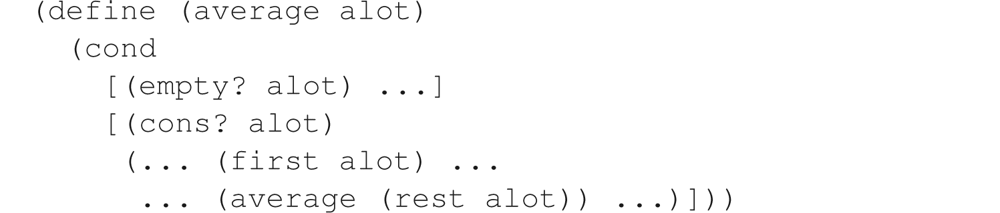
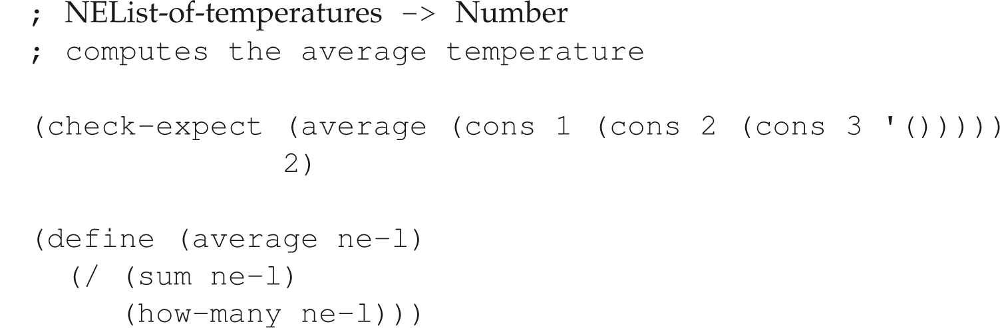
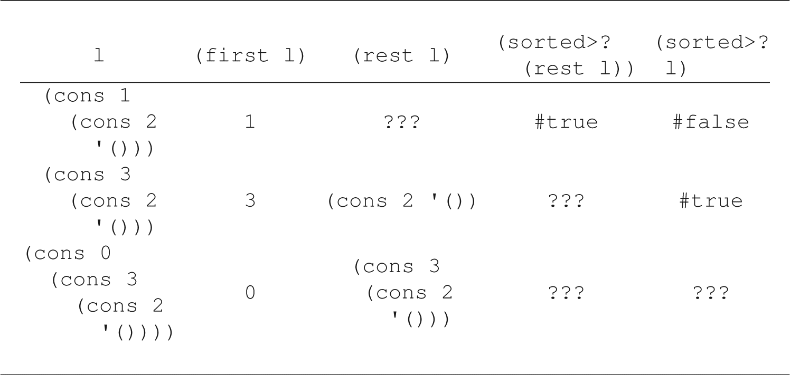

9.2 Non-empty Lists
Now you know enough to use cons and to create data definitions for lists. If you solved (some of) the exercises at the end of the preceding section, you can deal with lists of various flavors of numbers, lists of Boolean values, lists of images, and so on. In this section we continue to explore what lists are and how to process them.
Let’s start with the simple-looking problem of computing the average of a list of temperatures. To simplify, we provide the data definitions:
; A List-of-temperatures is one of:
; -- '()
; -- (cons CTemperature List-of-temperatures)
; A CTemperature is a Number greater than -272.
For our intentions, you should think of temperatures as plain numbers, but the second data definition reminds you that in reality not all numbers are temperatures and you should keep this in mind.
The header material is straightforward:
; List-of-temperatures -> Number
; computes the average temperature
(define (average alot) 0)
Making up examples for this problem is also easy, and so we just formulate one test:
(check-expect
(average (cons 1 (cons 2 (cons 3 '())))) 2)
The expected result is of course the sum of the temperatures divided by the number of temperatures.
A moment’s thought tells you that the template for average should be similar to the ones we have seen so far:

The two cond clauses mirror the two clauses of the data definition; the questions distinguish empty lists from non-empty lists; and the natural recursion is needed because of the self-reference in the data definition.
It is way too difficult, however, to turn this template into a function definition. The first cond clause needs a number that represents the average of an empty collection of temperatures, but there is no such number. Similarly, the second clause demands a function that combines a temperature and an average for the remaining temperatures into a new average. Although possible, computing the average in this way is highly unnatural.
When we compute the average of temperatures, we divide their sum by their number. We said so when we formulated our trivial little example. This sentence suggests that average is a function of three tasks: summing, counting, and dividing. Our guideline from Part I tells us to write one function per task, and if we do so the design of average is obvious:
; List-of-temperatures -> Number
; computes the average temperature
(define (averagealot)
(/ (sumalot) (how-manyalot)))
; List-of-temperatures -> Number
; adds up the temperatures on the given list
(define (sumalot) 0)
; List-of-temperatures -> Number
; counts the temperatures on the given list
(define (how-manyalot) 0)
The last two function definitions are wishes, of course, for which we need to design complete definitions. Doing so is easy because how-many from above works for List-of-strings and List-of-temperatures (why?) and because the design of sum follows the same old routine:
; List-of-temperatures -> Number
; adds up the temperatures on the given list
(define (sum alot)
(cond
[(empty? alot) 0]
[else (+ (first alot) (sum (rest alot)))]))
Stop! Use the example for average to create one for sum and ensure that the test runs properly. Then run the tests for average.
When you read this definition of average now, it is obviously correct simply because it directly corresponds to what everyone learns about averaging in school. Still, programs run not just for us but for others. In particular, others should be able to read the signature and use the function and expect an informative answer. But, our definition of average does not work for empty lists of temperatures.
Exercise 143. Determine how average behaves in DrRacket when applied to the empty list. Then design checked-average, a function that produces an informative error message when it is applied to '(). 
In mathematics, we would say exercise 143 shows that average is a partial function because it raises an error for '().
An alternative solution is to inform future readers through the signature that average doesn’t work for empty lists. For that, we need a data representation for lists that excludes '(), something like this:
; An NEList-of-temperatures is one of:
; -- ???
; -- (cons CTemperature NEList-of- temperatures)
The question is with what we should replace “???” so that the '() list is excluded but all other lists of temperatures still constructable. One hint is that while the empty list is the shortest list, any list of one temperature is the next shortest list. In turn, this suggests that the first clause should describe all possible lists of one temperature:
; An NEList-of-temperatures is one of:
; -- (cons CTemperature '())
; -- (cons CTemperature NEList-of-temperatures)
; interpretation non-empty lists of Celsius temperatures
While this definition differs from the preceding list definitions, it shares the critical elements: a self-reference and a clause that does not use a self-reference. Strict adherence to the design recipe demands that you make up some examples of NEList-of-temperatures to ensure that the definition makes sense. As always, you should start with the base clause, meaning the example must look like this:
(cons c '())
where c stands for a CTemperature, like thus: (cons -273 '()). Also, it is clear that all non-empty elements of List-of-temperatures are also elements of the new class of data: (cons 1 (cons 2 (cons 3 '()))) fits the bill if (cons 2 (cons 3 '())) does, and (cons 2 (cons 3 '())) belongs to NEList-of-temperatures because (cons 3 '()) is an element of NEList-of-temperatures, as confirmed before. Check for yourself that there is no limit on the size of NEList-of-temperatures.
Let’s now return to the problem of designing average so that everyone knows it is for non-empty lists only. With the definition of NEList-of-temperatures, we now have the means to say what we want in the signature:

This alternative development explains that, in this case, we can narrow down the domain of average and create a total function.
Naturally the rest remains the same: the purpose statement, the example-test, and the function definition. After all, the very idea of computing the average assumes a non-empty collection of numbers, and that was the entire point of our discussion.
Exercise 144. Will sum and how-many work for NEList-of-temperatures even though they are designed for inputs from List-of-temperatures? If you think they don’t work, provide counter-examples. If you think they would, explain why.
Nevertheless, the definition also raises the question how to design sum and how-many because they consume instances of NEList-of-temperatures now. Here is the obvious result of the first three steps of the design recipe:
; NEList-of-temperatures -> Number
; computes the sum of the given temperatures
(check-expect
(sum (cons 1 (cons 2 (cons 3 '())))) 6)
(define (sum ne-l) 0)
The example is adapted from the example for average; the dummy definition produces a number, but the wrong one for the given test.
The fourth step is the most interesting part of the design of sum for NEList-of-temperatures. All preceding examples of design demand a template that distinguishes empty lists from non-empty, that is, consed, lists because the data definitions have an appropriate shape. This is not true for NEList-of-temperatures. Here both clauses add consed lists. The two clauses differ, however, in the rest field of these lists. In particular, the first clause always uses '() in the rest field and the second one uses cons instead. Hence the proper condition to distinguish the first kind of data from the second extracts the rest field and then uses empty?:
; NEList-of-temperatures -> Number
(define (sum ne-l)
(cond
[(empty? (rest ne-l)) …]
[else …]))
Here else replaces (cons? (rest ne-l)).
Next you should inspect both clauses and determine whether one or both of them deal with ne-l as if it were a structure. This is of course the case, which the unconditional use of rest on ne-l demonstrates. Put differently, add appropriate selector expressions to the two clauses:
(define (sum ne-l)
(cond
[(empty? (rest ne-l)) (… (first ne-l) …)]
[else (… (first ne-l) … (rest ne-l) …)]))
Before you read on, explain why the first clause does not contain the selector expression (rest ne-l).
The final question of the template design concerns self-references in the data definition. As you know, NEList-of-temperatures contains one, and therefore the template for sum demands one recursive use:
(define (sum ne-l)
(cond
[(empty? (rest ne-l)) (… (first ne-l) …)]
[else
(… (first ne-l) … (sum (rest ne-l)) …)]))
Specifically, sum is called on (rest ne-l) in the second clause because the data definition is self-referential at the analogous point.
For the fifth design step, let’s understand how much we already have. Since the first cond clause looks significantly simpler than the second one with its recursive function call, you should start with that one. In this particular case, the condition says that sum is applied to a list with exactly one temperature, (first ne-l). Clearly, this one temperature is the sum of all temperatures on the given list:
(define (sum ne-l)
(cond
[(empty? (rest ne-l)) (first ne-l)]
[else
(… (first ne-l) … (sum (rest ne-l)) …)]))
The second clause says that the list consists of a temperature and at least one more; (first ne-l) extracts the first position and (rest ne-l) the remaining ones. Furthermore, the template suggests to use the result of (sum (rest ne-l)). But sum is the function that you are defining, and you can’t possibly know how it uses (rest ne-l). All you do know is what the purpose statement says, namely, that sum adds all the temperatures on the given list, which is (rest ne-l). If this statement is true, then (sum (rest ne-l)) adds up all but one of the numbers of ne-l. To get the total, the function just has to add the first temperature:
(define (sum ne-l)
(cond
[(empty? (rest ne-l)) (first ne-l)]
[else (+ (first ne-l) (sum (rest ne-l)))]))
If you now run the test for this function, you will see that the leap of faith is justified. Indeed, for reasons beyond the scope of this book, this leap is always justified, which is why it is an inherent part of the design recipe.
Exercise 145. Design the sorted>? predicate, which consumes a NEList-of-temperatures and produces #true if the temperatures are sorted in descending order. That is, if the second is smaller than the first, the third smaller than the second, and so on. Otherwise it produces #false.
Hint This problem is another one where the table-based method for guessing the combinator works well. Here is a partial table for a number of examples in figure 58. Fill in the rest of the table. Then try to create an expression that computes the result from the pieces.

Figure 58: A table for sorted>?
Exercise 146. Design how-many for NEList-of-temperatures. Doing so completes average, so ensure that average passes all of its tests, too.
Exercise 147. Develop a data definition for NEList-of-Booleans, a representation of non-empty lists of Boolean values. Then redesign the functions all-true and one-true from exercise 140.
Exercise 148. Compare the function definitions from this section (sum, how-many, all-true, one-true) with the corresponding function definitions from the preceding sections. Is it better to work with data definitions that accommodate empty lists as opposed to definitions for non-empty lists? Why? Why not?